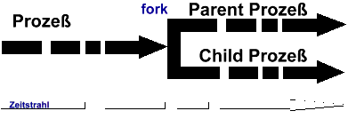
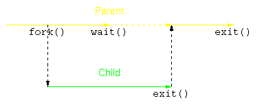
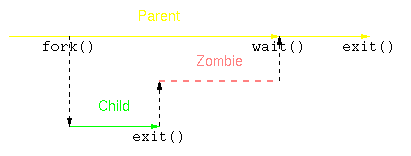
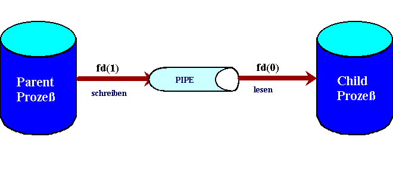
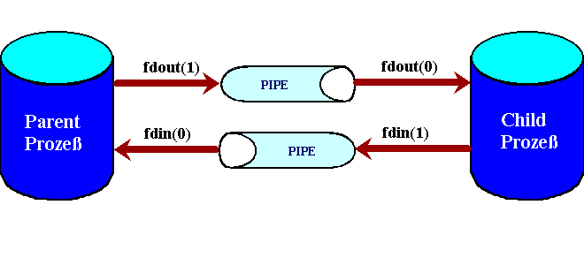
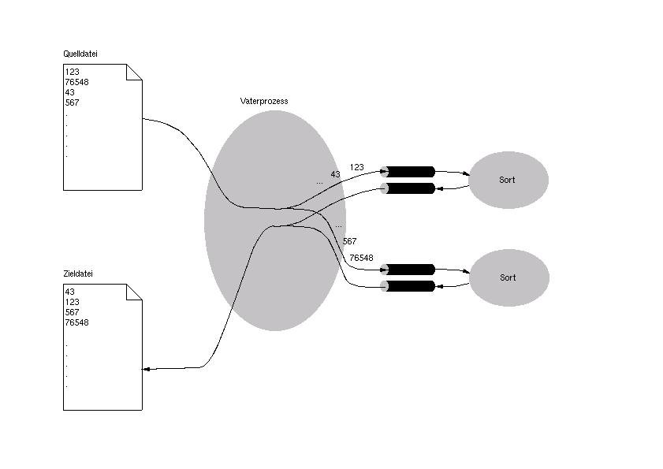

Wir wollen hier die im POSIX beschriebenen Methoden und Konzepte
zum Multitasking (Nebenläufigkeit) und der
Prozesskommunikation/-Synchronisation (IPC=InterProcessCommunication)
üben.
Im Detail werden folg. Themen/Begriffe besprochen:
Signale (signal(),alarm(), ...)
Prozesse (fork(), exec(), wait(), ...)
Kommunikation (pipe(), popen(),fdopen(), streams)
Synchronisation: Lock-Files
Workshop:
http-server mit fork()
Parallelles Sortieren (MergeSort)
|
Signale: alarm(), signal() (4h) |
Signale werden zur einfachen Kommunikation zwischen Programmen
verwendet. Mögliche Anwendungen sind:
auf Programmabbruch durch Ctrl-C reagieren können
einem Programm während seiner Laufzeit mitteilen, es möge seine Konfiguration neu auslesen
auf einen Timeout reagieren können
...
Hinweis:
alarm - set an alarm
clock for delivery of a signal
signal - ANSI C signal handling
man
3 alarm
http://www.manpagez.com/man/3/Signal/
Übung (selfalarm.c):
// a.hofmann mar2004
//
selfalarm.c
#include <stdio.h>
#include
<unistd.h>
int main(int argc, char * argv[]){
if (argc==1){
printf("usage:
selfalarm.exe #"); exit(1);
}
alarm(10); //nach 10 sekunden,
bricht das Programm ab
while(1)
printf("%s",
argv[1]);
return 0;
}
// gcc selfalarm.c -o
selfalarm.exe
// starte mit: ./selfalarm.exe 1 &
./selfalarm.exe 0
Starten Sie das Programm selfalarm.exe 2× gleichzeitig mit
./selfalarm.exe 1 & ./selfalarm.exe 0
Die Eingabe "x & y" startet die beiden
Kommandos x und y gleichzeitig.
Frage:
Können Sie die Wirkung des preemptive
Multitasking beobachten?
Wir wollen nun, wenn das Signal SIGALRM erzeugt wird, das
Programm nicht abbrechen lassen, sondern eine eigene C-Funktion
aufrufen lassen.
Übung: (id-code.c)
Bringen Sie
folgendes Programm zum Laufen und erklären Sie seine Funktion/*
Datei: id-code.c Hofmann Anton
* Demo: Zeiger auf Funktionen
und Interprocess Communication
* Read with timeout
*/
#include <signal.h>
#include <stdio.h>
int
toolong;
int count;
void wakeup(){
toolong=1;
count++;
#ifdef DEBUG
printf("wakeup was
called\n"); fflush(stdout);
#endif
alarm(10);
}
int main(){
int idcode;
void (*alrm_func)(); //Pointer,um die Adresse der 'alten'
Alarmfunktion zu speichern.
while(1) {
printf("Wie lautet Ihr
ID-CODE ? ");
toolong=
0; // setze das Alarmsignal auf wakeup() und speichere den alten
Zeiger alrm_func.
alrm_func= signal(?????????, ???????????);
/* setze den Alarm-Timer */
alarm(10);
/* lies ID-CODE */
scanf("%d", &idcode);
if (toolong == 0) break; /* ID-CODE wurde ohne timeout
eingeben->verlasse Schleife */
if (count == 1) /* Antwort auf ersten timeout */ {
printf("\nIhren ID-CODE
finden Sie auf Ihrer ID-KARTE.\n");
fflush(stdout);
}
else {
printf("\nFragen Sie im
Sekretariat nach einer neuen ");
printf("ID-KARTE, \nfalls sie verloren
gegangen ist.\n");
exit(1); /* PROGRAMMABBRUCH */
}
} /* end_while */
/* setze das Alarmsignal wieder zurueck*/
signal(????????????, ??????????????);
alarm(0);
printf("\nID-CODE: %d\n",
idcode);
} /*end_main*/
gcc
-DDEBUG .... bewirkt, dass auch die Anweisungen zwischen #define
DEBUG .... #endif übersetzt werden
Aufgabe (wecker.c: Wecker mit Text):
Wir wollen
einen "Wecker mit Text" erstellen. Man startet diesen und
übergibt ihm eine Zeit in Sekunden und einen Text. Wenn diese Zeit
abgelaufen ist, wird vom Wecker ein Signal (SIGALRM) abgesetzt.
Standardmäßig wird dann das laufende Programm beendet. Wir wollen
aber, dass das Programm vor dem Ende noch den Text ausgibt.
Übung:
(control-c.c)
Schreiben Sie ein Programm, das beim erstmaligen
Drücken von Ctrl-C den Text "Control-c" am Bildschirm
ausgibt. Beim zweiten Drücken von Ctrl-C soll das Programm beendet
werden. (exit(1)).
Bringen Sie folgendes Programm zum Laufen./*
hofmann anton
* control-c.c
* demo: SIGINT
abfangen
* Ctrl+C fuehrt erst beim 2.mal zu einem
Programmabbruch
* 2004
*/
#include
<stdio.h>
#include <signal.h>
int flagSIGINT =
0;
/* beim 1. Aufruf wird die globale Variable flagSIGINT
inkrementiert;
beim 2. Aufruf erfolgt der
Programmabbruch */void mySIGINT(){
if (flagSIGINT == 0){
flagSIGINT++;
}
else{
printf("SIGINT zum 2. Mal\n");
exit(1);
}
}
int
main (){
printf("Demo: Erst beim 2.
Auftreten von SIGINT erfolgt der Programmabbruch");
fflush(stdout);
if (signal(SIGINT,
SIG_IGN) != SIG_IGN)
signal
(SIGINT, mySIGINT);
for
(;;){
printf("Hello,
world !\n");
}
}
Mit dem Kommando kill (man kill) kann man von der Shell aus
Programmen Signale schicken. Oft werden hier die Signale USR1 bzw.
USR2 verwendet. Hier ein Beispiel:
* aufruf:
./kill-usr1-usr2.exe &
* [1] 4720
*
$ kill -USR1 4720
* $ kill -USR2 4720
*
$ kill 4720
Übung: (kill-usr1-usr2.c)/*
Datei: kill-usr1-usr2.c Hofmann
Anton
* demo signal()
* gcc kill-usr1-usr2.c -o
kill-usr1-usr2.exe * aufruf:
./kill-usr1-usr2.exe &
* [1] 4720
*
$ kill -USR1 4720
* $ kill -USR2 4720
*
$ kill 4720
*/
#include <stdio.h>
#include
<signal.h>
#include <errno.h>
static void
sig_usr (int); /* one handler for both signals */
int
main(){
if (signal (SIGUSR1, sig_usr) == SIG_ERR)
perror ("Can't catch SIGUSR1");
if (signal (SIGUSR2,
sig_usr) == SIG_ERR)
perror ("Can't catch
SIGUSR2");
for (;;)
pause(); // The
pause() function forces a process to
pause until a signal is received
} /* end_main*/
/*
-------------------------------------------------- */
static
void
sig_usr( int signo) /* argument is signal
number */
{
if (signo == SIGUSR1)
printf("received SIGUSR1\n");
else if (signo ==
SIGUSR2)
printf("received
SIGUSR2\n");
else
printf ("received
signal %d\n", signo);
}
Hinweis:
siehe
auch man 2 kill
Aufgabe:
Version1: Schreiben Sie das
Programm t_minish.c derart um,
dass bei Auftreten des Signals USR1 die zur Zeit aktive Liste von
Befehlen verworfen wird.
Version2: Schreiben Sie das Programm
t_minish.c derart um, dass bei
Auftreten des Signals USR1 die Datei default.msh eingelesen wird. Die
zur Zeit aktive Liste von Befehlen soll verworfen werden.
|
Prozesse: fork(), exec() (4h) |
fork, vfork - erzeuge einen Kindprozess.
Vater- und
Kindprozess haben einen getrennten Adressraum. Nach einem fork() wird
ein sogenannter Child-Prozess erzeugt, der einen eigenen (echte
Kopie des Parent-Prozesses) Speicher besitzt. Auch der IP
(Instruction Pointer) wird kopiert. Deshalb ist eine
Verzweigung nach dem fork() wichtig. (s.u.)

Anmerkung:
Bei
Threads ist dies nicht der Fall. Hier teilen sich die Threads den
Adressraum. Jeder Thread besitzt allerdings einen eigenen Stack und
Statusinformationen.
Übung:
(forkdemo.c)
bringen sie folgendes Programm zum Laufen
//a.hofmann 2004
//forkdemo.c
#include
<stdio.h>
#include <stdlib.h>
#include
<unistd.h>
void arbeite(char*, int);
int main()
{
int i = 0;
int pid=
getpid();
int status;
printf("\nNur ein Prozess
bisher: PID= %d\n", pid);
printf("Aufruf
von fork in 5 sec ...\n");
while(i <
5){
printf("%d\n",
i++);
sleep(1);
}
status= fork();
if (status == 0) { // ******CHILD******* Prozess erzeugen
pid= getpid();
printf("\n
ICH bin der KIND-Prozess: PID= %d\n", pid);
arbeite("
KIND-Prozess: ", pid);
}
else if (status > 0) //*****PARENT****** Prozess erzeugen
arbeite("VATER-Prozess: ", pid);
else
printf("\nERROR:
Kein Child erzeugt!!\n");
return
0;
}
void arbeite(char *s, int pid) {
int i=0;
while(i < 10) {
printf("%s PID= %d i=%d \n", s, pid, i++);
sleep(1);
}
}
// gcc forkdemo.c
-o forkdemo.exe; ./forkdemo.exe
Anmerkung: Erst bei
schreibendem Zugriff auf Variablen, werden diese kopiert.
D.h.
parent und child haben dann eigene Variablen
Schreiben Sie das obige Programm
selfalarm.c derart um, dass das Verhalten gleich bleibt, aber nur
folgendermaßen aus der Shell aufgerufen werden
muss.
./selfalarm-fork.exe 1
0
Aufgabe: (file-server mit fork)
Schreiben
Sie das Programm t_fileserver.c derart
um, dass das Filehandling durch einen Child-Prozesse realisiert wird.
Dadurch kann der Server bereits den nächsten Request eines
Client-Programmes t_fileclient.c
annehmen.
Frage:
Beim Testen des Programmes finden
Sie in der Prozessliste (ps -aux) Einträge mit ....<defunc>.
Was ist damit gemeint? Wie kann man dies verhindern?
+Aufgabe: (base64 Verschlüsselung)
Schreiben Sie
das Programm t_fileserver.c ,
t_fileclient.c derart um, dass der
Client bei Eingabe von "get filename" die Datei namens
filename öffnet, zum Server schickt. Dieser verschüsselt die
empfangenen Daten mit dem base64 Algorithmus und sendet diese an den
Client zurück. Der Client zeigt die kodierten Daten auf dem
Bildschirm an.
Hinweis:
Bei www.zotteljedi.de
finden Sie Hinweise zur Lösung.
|
Prozesse überlagern: exec(), execlp(), .... |
Wir wollen nun die sogenannte Prozessüberlagerung
kennenlernen. Ein Prozess kann sich selbst in einen anderen Prozess
"verwandeln".
Übung:
(execlp-demo.c)
Prozessüberlagerung mit execlp(), ....//
a.hofmann 2004
// execlp-demo.c
#include <stdio.h>
int
main(){
int rv;
printf("Demo: execlp(): Ausfuehrung von sort:\n");
printf("Bitte geben sie einzelne Textzeilen ein.\n");
printf("Diese werden nach <Ctrl-D> sortiert
ausgegeben\n");
rv = execlp("sort",
"sort", NULL);
/*
Fehlerfall!!!!!!!!!: Dürfte eigentlich nicht mehr ausgeführt werden
*/
printf("Fehler bei execlp");
exit(1);
}
// gcc -o execlp-demo.exe execlp-demo.c;
./execlp-demo.exe
Hinweis:
rv =
execlp("/bin/ls", "ls", "-l", NULL);
|
Wait: warten auf Prozesse |
Oft bzw. meist ist es praktisch/notwendig, dass der
Vaterprozess auf den Kindprozess wartet. Dabei spricht man von einer
Art Synchronisation. Die Funktion wait() kann dazu verwendet werden.
Man kann dadurch auch den Rückgabewert (return bzw. exit()) des
Kindprozesses erhalten. Also eine einfache Art der Kommunikation
erreichen.
Hinweis:#include
<sys/types.h>
#include <sys/wait.h>
3 Formen
sind möglich:
pid_of_child= wait
(&status); //status= der vom child mittels
exit() zurückgeg. Wert
pid_of_child= wait
((int*)0); //status ist
für parent nicht interessant
pid_t waitpid(pid_t pid, int *status, int options);
Hinweis zum Exit-Status eines Prozesses:
This status can be evaluated with the
following macros (these macros
take the stat buffer (an int) as an argument — not a
pointer to the
buffer!):
WIFEXITED(status)
returns true if the child terminated normally, that is, by
call‐
ing exit() or _exit(), or by returning from main().
WEXITSTATUS(status)
evaluates to the least significant eight bits of the return
code
of the child which terminated, which may have been
set as the
argument to a call to exit() or _exit() or as the argument for
a
return statement in the main program. This
macro can only be
evaluated if WIFEXITED returned true.
Übung:
(wait.c)
Der laufende Prozess teilt sich durch fork auf
in Parent und Child, Parent bleibt unverändert. Child lädt durch
exec ein anderes Programm und verwandelt sich in dieses. Von
da an laufen beide Prozesse konkurrent zueinander ab und verrichten
verschiedene Aufgaben. Durch wait kann Parent sich mit dem
Child synchronisieren in dem Sinne, dass er wartet, bis dieser
fertig ist. Durch exit() kann das Child zusätzlich eine
Erfolgsmeldung an den Parent-Prozess geben. //a.hofmann
2004
// wait.c
//2 unabh. prozesse starten: fork-> execlp |
wait
#include <stdio.h>
int main() {
int pid;
printf("Demo: fork(), execlp(), wait():
Ausfuehrung von sort\n");
printf("Bitte
geben sie einzelne Textzeilen ein.\n");
printf("Diese werden nach <Ctrl-D> sortiert
ausgegeben\n");
pid = fork();
/* Parent-Prozeß ---------------------- */
if
(pid > 0) {
int status;
wait(&status);
/* wartet, bis Child fertig */
printf("VATER-Prozess: child-Prozess ist fertig und lieferte:
%d\n", status);
exit(0);
}
/* Child-Prozess ----------------------- */
if (pid == 0) {
execlp("sort",
"sort", NULL);
/* Fehlerfall */
printf("Fehler
bei execlp");
exit(1);
}
}
// gcc -o wait.exe wait.c ; ./wait.exe


|
Kommunikation zwischen Parent und Child: pipe() (4h) |
Erste Übungen zur IPC (InterProcessCommunication):
Kommunikation über gemeinsame Dateien
Prozesse
schreiben in Dateien, die von anderen Prozessen gelesen
werden.
Beispiel:
mkfifo /tmp/bla; ls -l
/tmp/bla
shell1: cat /etc/passwd > /tmp/bla
shell2: cat
/tmp/bla
Beispiel:
vi /etc/syslog.conf .... *.*
|/dev/xconsole
rcsyslog restart
shell1: cat
/dev/xconsole
shell2: su -
shell2: logger "Dies ist ein
Test f. syslog und named pipe /dev/xconsole"
Kommunikation über Pipes
Dies sind unidirektionale
Datenkanäle zwischen zwei Prozeßen. Ein Prozeß schreibt Daten in
den Kanal (Anfügen am Ende) und ein anderer Prozeß liest die Daten
in der gleichen Reihenfolge wieder aus (Entnahme am Anfang).
Realisierung im Speicher oder als Dateien. Lebensdauer in der Regel
solange beide Prozeße existieren.
[Beispiel: POSIX: cat
/etc/passwd | cut -d":" -f1 | sort > usernames.txt]
Pipes sind bidirektionale Kanäle, die zur Kommunikation
zwischen verwandten Prozessen verwendet werden. Die Funktionen
write() und read() bzw. fgets(),fputs(), ...
werden dabei verwendet.
Zuvor müssen allerdings mit
pipe() Kommunikationskanäle (eine Art Filedeskriptoren)
erzeugt werden. Dabei hat der Lesekanal den Offset 0 und der
Schreibekanal den Offset 1.
Anmerkung:write(1,
buf, 128); schreibt 128 Bytes (buf[0] bis buf[127]) auf den
Standardausgabekanal (Bildschirm.)
read(0, buf, 128);
liest 128 Bytes vom Standardeingabekanal (Tastatur)
Hinweis:
(unix-like filehandling vs. stream-Files)
#include <sys/types.h>
#include <sys/stat.h>
#include <fcntl.h>
#include <unistd.h>
int open(const char *pathname, int flags);
The open()
system call is used to convert a pathname into a file
descriptor (a small, non-negative
integer for use in subsequent I/O as with read, write, etc.).
When the call is successful, the file
descriptor returned will be the lowest file descriptor not currently
open for the process. This call
creates a new open file, not shared with any other process.
(But shared open files may arise via the
fork(2) system call.) The new
file descriptor is set to remain open across exec functions
(see
fcntl(2)). The
file offset is set to the beginning of the file.
The parameter flags is one of O_RDONLY, O_WRONLY or O_RDWR which
request opening the file read-only,
write-only or read/write, respectively, bitwise-or'd.
size_t read(int fd, void *buf, size_t count);
read wird solange blockiert,
bis sich wieder genügend Daten in der Pipe befinden.
Schreibt kein Prozeß mehr in die Pipe bleibt read solange stecken
bis der schreibende
Prozeß den Systemaufruf close verwendet hat. Dieses
steckenbleiben von read eignet sich prima zum
Syncronisieren von
Prozessen.
size_t write(int fd, const void *buf, size_t count);
write schreibt die Daten in der
richtigen Reihenfolge in die Pipe. Ist die Pipe voll, wird der
schreibende Prozeß solange
angehalten bis wieder genügend Platz vorhanden ist. Diese
Verhalten
könnten sie abschalten
in dem sie das Flag O_NONBLOCK mit z.B. der Funktion fcntl setzen.
In diesem Fall liefert der
Schreibende Prozeß 0 zurück.
int close(int fd);
Schliesst den Filedeskriptor
Streams
in C (siehe C-Skriptum: 2ikt)
fopen()
fprintf()
fputs()
fgets()
fclose()
FILE *fdopen(int fildes, const char *mode);
The fdopen function associates
a stream with the existing file descriptor, fildes.
The mode of the
stream (one of the values "r", "r+",
"w", "w+", "a", "a+") must be
compatible with the mode of the
file descriptor. The file position indicator of the new stream
is set to that belonging to fildes,
and the error and end-of-file indicators are cleared.
Modes "w" or "w+" do not cause truncation
of
the file. The file
descriptor is not dup'ed, and will be closed when the stream created
by fdopen is
closed.
The result of applying fdopen to a shared memory object is
undefined.
siehe:
man pipe
man 2 open
man read write close fdopen
Übung: (pipe-fork.c)// a.hofmann 2004
//
pipe-fork.c
#include <stdio.h>
#include
<unistd.h>
#define LESE_KANAL 0
#define SCHREIB_KANAL
1
char *mes1 = "Hallo, Welt Nr.1";
char *mes2 =
"Hallo, Welt Nr.2";
char *mes3 = "Hallo, Welt
Nr.3";
int main(){
char buf[128];
int fd[2], k, pid;
/* Pipe oeffnen */
if (pipe(fd)
< 0) {
perror("Fehler bei
pipe");
exit(1);
}
/* Child-Prozess erzeugen */
if
((pid = fork()) < 0) {
perror("Fehler bei fork");
exit(1);
}
/* Parent-Prozess:
Leseseite der Pipe
schliessen und
in die Pipe schreiben */
else if (pid > 0) { /*
PARENT ===================== */
int
status;
close(fd[LESE_KANAL]);
write(fd[SCHREIB_KANAL], mes1, strlen(mes1)+1);
//inkl EOS
write(fd[SCHREIB_KANAL], mes2, strlen(mes1)+1);
write(fd[SCHREIB_KANAL], mes3,
strlen(mes1)+1);
close(fd[SCHREIB_KANAL]);
wait(&status);
}
/* Child-Prozess: Schreibseite der Pipe
schliessen und von der Pipe lesen */
if (pid == 0) {
/* CHILD ===================================*/
int len;
close(fd[SCHREIB_KANAL]);
len=read(fd[LESE_KANAL], buf, sizeof(buf));
printf("%s\n%d Bytes gelesen!\nFrage: Warum wird nur die erste
Zeile angezeigt?\n\n", buf, len);
close(fd[SCHREIB_KANAL]);
exit(1);
}
}
// gcc pipe-fork.c -o
pipe-fork.exe; ./pipe-fork.exe
anzahl=read(kanal,
buf, len) ist blockiernd, d.h. read() beendet, wenn
soviele Daten in den
Kommunikationskanal geschrieben wurden, wie in len angegeben
sind.
Dann steht in anzahl der gleiche Wert wie in len.(s.
pipe-demo.c) Oder, wenn
der Schreibkanal geschlossen wird. close(fd[1]);
Dann
steht in anzahl die Anzahl der gesendeten Bytes.
Wir wollen nun zwischen Prozessen mittels pipe()
kommunizieren. Dazu folgendes Beispiel:
Hinweis:
Standard-E/A-Funktionen mit pipe
Natürlich ist es auch
möglich auf Pipes mit Standard Stream E/A - Funktionen zuzugreifen.
Dazu müssen sie nur die mit dem pipe() - Aufruf erhaltenen
Filedeskriptoren mit der Funktion fdopen (Siehe Kapitel
Low-Level-I/O) einen Dateizeiger (FILE *) zuteilen. Natürlich müssen
sie fdopen mit dem richtigen Modus verwenden. Denn es ist nicht
möglich.......
FILE
*f;
f=fdopen(fd[0], "w"); /*falsch*/
...zu verwenden da fd[0] für das Lesen aus einer Pipe steht.
Richtig ist dagegen.....
FILE *reading,
*writing;
reading=fdopen(fd[0], "r");
writing
=fdopen(fd[1], "w");
Geben sie Ihrem Dateizeiger einfach einen aussagekräftigen
Namen um Verwechslungen auszuschliessen. Sehen wir uns dazu wieder
ein Beispiel an........
/*
* pipe2.c: Demo:
pipe, fork, fdopen
* fgets(stdin)::PARENT::fputs(writing)
-> fgets(reading)::CHILD::fputs(newfile)
* Aufruf:
./pip2 pip2.c
* gcc pip2.c -o pip2 ; ./pip2
pip2.c
*/
#include <unistd.h>
#include
<sys/wait.h>
#include <stdio.h>
#include
<sys/types.h>
#include <fcntl.h>
#include
<string.h>
#define USAGE printf("usage : %s
Datei\n",argv[0]);
#define MAX 4096
int main(int argc,
char *argv[]){
int fd[2],
fd1,i, n;
pid_t pid;
char puffer[MAX];
FILE *reading, *writing, *newfile;
if(argc !=2)
{ USAGE; exit(0); }
/*Wir
erstellen eine pipe*/
if(pipe(fd)
<0)
{ perror("pipe : "); exit(0);
}
/*Wir erzeugen einen neuen Prozess*/
if((pid=fork()) < 0)
{ perror("pipe : "); exit(0); }
else if(pid >
0) /* ====================== Elternprozess*/
{
close(fd[0]); /*Leseseite schliessen*/
if((writing=fdopen(fd[1],
"w")) == NULL)
{ perror(" fdopen : "); exit(0); }
fgets(puffer, MAX, stdin); /*Wir lesen von stdin
*/
fputs(puffer,
writing); /*Wir schreiben in die Pipe*/
fclose(writing);
}
else /* ====================================Kindprozess*/
{
close(fd[1]); /*Schreibseite
schliessen*/
if((reading=fdopen(fd[0], "r"))
== NULL)
{ perror("
fdopen : "); exit(0); }
fgets(puffer, MAX, reading); /*Wir lesen aus der Pipe*/
if((newfile=fopen(argv[1], "a+"))
< 0)
{ perror("fopen : ");
exit(0); }
fputs(puffer, newfile);
fclose(newfile);
fclose(reading);
}
exit(0);
}
Mit diesem
Programm öffnen bzw. erzeugen wir eine Datei, die als Argument in
der Kommandozeile angegeben wurde. Dann schließen wir im
Elternprozess die Leseseite der Pipe und teilen den FILE-Zeiger mit
fdopen() die Schreibseite der Pipe zu. Dann lesen wir aus der
Standardeingabe mit fgets und danach schreiben wir mit fputs in die
Pipe. Der Kindprozess schließt dann die Pipe und teilt dem
FILE-Zeiger die Leseseite von der Pipe zu. Anschließend lesen wir
aus der Pipe mit fgets und schreiben dies mit fputs in die neue
Datei.
Zusammenfassung:
Beispiel: Zwei verwandte
Prozesse und eine pipe
In der Praxis werden Pipes zur
Datenübermittlung zwischen verwandten Prozessen, z.B. zwischen
Parent-Prozeß und Child-Prozeß herangezogen. Der Grund: die
Vererbung der Filedeskriptoren macht es erst möglich, die Pipe durch
zwei Prozesse gleichzeitig zu benutzen. Nicht miteinander verwandte
Prozesse können nicht durch gewöhnliche Pipes kommunizieren. Bei
diesen können zB. Named Pipes verwendet werden. (s. Gräfe:
IPC)
Normalerweise erzeugt der Parent-Prozeß die Pipe
und führt dann ein fork aus. Der Child-Prozeß besitzt
anschließend durch Vererbung Kopien der Filedeskriptoren der Pipe.
D.h. beide Prozesse haben gemeinsamen Zugriff auf die Pipe.
Allerdings können beide dann auch Lesen und Schreiben, was
garantiert Verwirrung stiftet. Aus diesem Grunde gehört es zum guten
Stil, daß jeder Prozeß nun - nach dem fork - den Filedeskriptor
schließt, den er nicht braucht. Dies ist auch wegen der begrenzten
Anzahl zur Verfügung stehender Deskriptoren anzuraten. Im unserem
nächsten Beispiel wird genau so vorgegangen.

Aufgabe:
(pipe-fork1.c)
Erstellen Sie das Programm pipe-fork1.c,
wobei
der Vaterprozess
schliesst Lesekanal und
liest von der Tastaur Text ein (Ende mit "quit") und schreibt diesen in den Schreibekanal (inkl.EOS)
der Child-Prozess
schliesst den Schreibkanal und
liest aus dem Lesekanal und
wandelt das Gelesene in Grossbuchstaben um (toupper()) und
schreibt den Text auf den
Bildschirmprintf("
CHILD: %s\n", buf); fflush(stdout);
Der Kommunikationsbuffer soll 128 Bytes
sein. D.h. während der Vaterprozess die Benutzereingabe liest und an
den Childprozess weiter reicht, soll der Childprozesse die gelesenen
Daten in Grossbuchstaben umwandeln und ausgeben.
Hinweis:
Verwenden
Sie read(), write() zur Kommunikation
Aufgabe:
(pipe-rate.c)
Zwei Prozesse spielen "Zahlenraten"
Parentprozeß denkt sich eine Zahl zwischen 1 und 100 aus
Dann
wiederholt bis zum Treffer...
1.Childprozeß
macht einen Rateversuch und schreibt die Zahl in die up-Pipe
2.Parentprozeß liest die geratene Zahl aus der up-Pipe
3.Parentprozeß bewertet die geratene Zahl mit -1 (zu tief), 0
(getroffen) oder +1 (zu hoch)
4.Parentprozeß schreibt die
Bewertung in die down-Pipe
5.Childprozeß liest die Bewertung aus
der down-Pipe und leitet daraus einen neuen Rateversuch ab
Hinweis:
Verwenden Sie fdopen(), fprintf(), fscanf() zur
Kommunikation
|
Bidirektionale Kommunikation mit einem externen Programm: fork()->close()->dup()->exec() |
Eine weitere gängige Aufgabenstellung im Zusammenhang mit
Pipes ist die, daß zwei Prozesse (Parent und Child) durch zwei Pipes
verbunden sind, die in verschiedene Richtungen wirken. Also ein
bidirektionaler Kanal.

Beispiel:
fork,close,dup,exec sort
Im folgenden Programm wird dieses
Prinzip in die Praxis umgesetzt. Zusätzlich wird der Child-Prozeß
mit exec durch ein neues Programm überlagert. In unserem Spezialfall
soll dieses die UNIX-Utility sort sein. Dabei ergibt sich ein für
Pipes charakteristisches Problem: sort kennt wie viele andere
UNIX-Dienstprogramme nur die standardmäßigen Filedeskriptoren 0, 1
und 2.
Anmerkung:
0 ... stdin, 1 ...
stdout, 2 ...stderr
Zur Hilfe kommt uns der
Systemaufruf dup(). (Dupliziere Filedeskriptoren). Dadurch kann der
mit execlp() gestartete Prozess auf die pipes zugreifen. Dadurch kann
also ein externes Programm aufgerufen werden und mit ihm über pipes,
wie oben, kommuniziert werden.
Im folgenden Programm kommt
dieser Trick öfters vor. Finden Sie heraus, wo! Man muß sich für
das Verständnis vor allem die Reihenfolge fork, close, dup, exec
merken.
siehe
dup, dup2 - duplicate a file
descriptor
close - close a file descriptor
Anmerkung:
Wenn
zB. ein Webserver mit einem externen Programm kommuniziert (zB: SSI),
wird diese Technik verwendet.
// a.hofmann
2004
// pipe2-execlp.c
// Beispiel fuer pipe, dup, fork, exec
#include <stdio.h>
#include <sys/types.h>
#include
<fcntl.h>
#define BUFLEN 512
#define SCHREIB
1
#define LIES 0
//PARENT: ---> fdparent_out[SCHREIB]
------> CHILD: fdparent_out[LIES]
//PARENT: <---
fdparent_in[LIES] <------ CHILD:
fdparent_in[SCHREIB]
int sortieren(char*
fname){
int fdparent_out[2],
fdparent_in[2];
int fd, nread;
char buf[BUFLEN];
//pipes
erzeugen
if (pipe(fdparent_in)
< 0 || pipe(fdparent_out) < 0) {
perror("Fehler bei pipe");
exit(1);
}
switch (fork())
{
case -1: /* Fehler
*/
perror("Fehler bei fork");
exit(1);
case 0: /*
Child-Prozess richtet eine pipe zw. parent und standard-unix utility
sort ein*/
// schliesst stdin, stdout
//
//
durch dieses schliessen werden die filedeskriptoren 0 und 1 frei
//
//
beim nächsten dup() werden diese freien filedeskriptoren vom
System
// wieder verwendet.
//
// Dadurch werden (s.u.), die
mit dup() duplizierten
//
fdparent_out[LIES] an filedeskriptor 0 und
//
fdparent_in[SCHREIB]an filedeskriptor 1 gebunden
//
// dies ist ideal
für den mit exec() aufgerufenen sort-Befehl, da dieser
// mit stdin und
stdout arbeitet.
//
// D.h. Die Ausgabe des PARENT wird an die stdin
des Sort-Befehls und
// Die Eingabe des
PARENT wrid an die stdout des Sort-Befehls gebunden
//
//
die standardkanäle des sort-prozesses sind mit den zuvor
duplizierten Kanälen
// verbunden. d.h.
// ein read(0,buf,len) des
sort-prozesses liest tatsächlich vom
//
fdparent_out[LIES]
// ein
write(1,buf,len) des sort-prozesses schreibt tatsächlich nach
//
fdparent_in[SCHREIB]
//
// Auf diese Weise kommuniziert der Parent
direkt mit dem externen Programm
close(fdparent_out[SCHREIB]);
close(fdparent_in[LIES]);
if (close(0) < 0) { //std-eingabe
schliessen
perror("Fehler bei close");
exit(1);
}
if (dup(fdparent_out[LIES]) != 0) {
perror("Fehler bei dup");
exit(1);
}
if (close(1) < 0) { //std-ausgabe
schliessen
perror("Fehler bei close");
exit(1);
}
if (dup(fdparent_in[SCHREIB]) != 1)
{
perror("Fehler bei dup");
exit(1);
}
close(fdparent_out[LIES]); //werden nicht mehr
gebraucht, da sort den child überlagert
close(fdparent_in[SCHREIB]);
execlp("sort", "sort",
NULL);
default: /* Parent-Prozess */
close(fdparent_out[LIES]);
close(fdparent_inp[SCHREIB]);
// FILE
if ((fd = open(fname, O_RDONLY)) < 0) {
perror("Fehler bei open");
exit(1);
}
while ((nread = read(fd, buf, sizeof(buf))) != 0) {
if (nread == -1) {
perror("Fehler bei read");
exit(1);
}
if (write(fdparent_out[SCHREIB], buf, nread)
== -1) {
perror("Fehler bei write auf Pipe");
exit(1);
}
}//while
close(fd);
close(fdparent_out[SCHREIB]);
while ((nread = read(fdparent_in[LIES], buf,
sizeof(buf))) != 0) {// Wir lassen das Programm
seinen eigenen Quelltext sortieren.
if (nread == -1) {
perror("Fehler bei read von Pipe");
exit(1);
}
if (write(1, buf, nread) == -1) {
perror("Fehler bei write");
exit(1);
}
}
close(fdparent_in[LIES]);
}
return(0);
}
int main(int argc, char* argv[]) {
if (argc < 2) {
fprintf(stderr,
"Aufruf: %s file\n", argv[0]);
exit(1);
}
sortieren(argv[1]);
}
// gcc -o pipe2-execlp.exe
pipe2-execlp.c; ./pipe2-execlp.exe pipe2-execlp.c
Wichtig
ist im Kindprozeß das Duplizieren des Filedeskriptors. Mit Hilfe der
dup()-Funktion bleibt bei einem exec-Aufruf das close-on-exec-Flag
gelöscht. Wir verbinden praktisch mit der Funktion dup die
Standardaus/eingabekanäle mit unseren Pipekanälen. Wichtig ist in
einem solchen Fall, wenn wir unseren Kindprozeß überlagern die
Reihenfolge: fork, close, dup, exec. Somit kommuniziert unser aktuell
laufender Elternprozeß mit dem Programm sort.
Aufgabe:
(pipe-execlp-befehl.c)
Schreiben Sie auf der Grundlage des
obigen Programmes, ein Programm, das als Argument einen einfachen
Unixbefehl (ls oder ps oder ...) erhält. Der Befehl soll vom PARENT
an den CHILD geschickt werden und dort mit einer entsprechenden
exec-Funktion ausgeführt werden. Die Ausgabe des Befehls soll direkt
an den PARENT geschickt werden.
Aufgabe:
(einfacher-telnetd.c)
Schreiben Sie das Programm
t_fileserver.c derart um, dass vom
Client-Programm einfache Unixbefehle geschickt werden. Diese sollen
analog zur vorherigen Aufgabe mittels child-prozesse ausgeführt
werden und das Ergebnis an den Client geschickt werden.
Client-Programm t_fileclient.c .
|
Bidirektionale Kommunikation mit Komfort: popen() |
Die Subroutine popen führt das im Parameter (String)
abgelegte Kommando mit Hilfe von system() aus. Dabei wird zusätzlich
eine Pipe zwischen dem aufrufenden Parent-Prozeß und der
Standardeingabe bzw. -ausgabe des Child-Prozesses angelegt. Auf diese
kann geschrieben (mode = "w") werden, bzw. von dieser kann
gelesen (mode = "r") bzw. mit Hilfe des Streams, den popen
als Ergebnis liefert. Im Fehlerfall ist NULL das Resultat von popen.
Die Subroutine pclose schließt den als Argument anzugebenden Stream
wieder und liefert den Status der Shell als Resultat. Falls sich der
Stream nicht schließen läßt, ist das Resultat gleich EOF.
Zum
Lesen bzw. Schreiben des Streams dienen die alltäglichen
Standard-I/O-Funktionen wie fgets() oder fputs().
popen,
pclose - process I/O
Beispiel: popen-demo.c//
a.hofmann 2004
// popen-demo.c
#include <stdio.h>
#define
LEN 50
char *mygetcwd(){
FILE *pstream;
char *ptr;
pstream = popen("pwd",
"r");
ptr = (char *) malloc(LEN);
if (fgets(ptr, LEN, pstream) == NULL) {
pclose(pstream);
return(NULL);
}
else {
pclose(pstream);
return(ptr);
}
}
int main() {
char *name;
name = mygetcwd();
if
(name != NULL)
printf("%s\n",
name);
else
printf("Fehler bei gcwdtst\n");
}
// gcc
popen-demo.c -o popen-demo.exe; ./popen-demo.exe
Aufgabe
(popen-starter.c):
Schreiben Sie ein Programm, das aus der
Kommandozeile als 1. Argument einen Dateinamen und als 2. Argument
ein Shellkommando erhält. Führen Sie dieses Kommando mit popen()
aus und schreiben Sie das Ergebnis in die
Datei.
Beispiel:
./popen-starter.exe erg.txt "find
/etc -type f | grep -i localhost"
Hinweis:
Da
der Befehl spaces enthalten kann, muss er mit "
" geklammert werden.
Aufgabe (popen-qt):
Schreiben
Sie ein Programm, das mittels qt eine GUI baut, die zwei Textboxes
und eine ListBox enthält.
1. TextEdit: zur Eingabe von
Shell-Kommandos
2. TextEdit: Ausgabe des Shell-Kommandos
3.
ComboBox: Listet alle eingegebenen Shell-Kommandos und bei Click auf
einen Listeneintrag wird dieses ausgeführt und in der 2. TextEdit
angezeigt.
Hinweis
Qt:
www.trolltech.com
qt-Docu
http://www.ruwela.de/Sub_Cpp/Sub_Cpp.html
http://www.hosengummi.de/
http://ni.cs.tu-berlin.de/lehre/CppPraktikum/BodyLehrplan.html
Hinweis
Programmerstellung:
$> designer
... designer starten
neues C++Projekt (Name: popen-qt)
neues Widget mit
1. TextEdit: zur Eingabe von Shell-Kommandos.
Bei Return soll popen() aufgerufen werden und die Ausgabe in folg. TextEdit angezeigt werden.
2. TextEdit: Ausgabe des Shell-Kommandos
3. ComboBox: Listet alle eingegebenen Shell-Kommandos und
bei Click auf einen Listeneintrag wird dieses ausgeführt
save
neues C++ Main-File (main.cpp)
qmake
make
./popen-qt
|
Kommunikation: Named pipe mkfifo() |
siehe ikt4 Gräfe: Kapitel IPC
|
Synchronisation mit Lockfiles |
Wir betrachten in diesem Abschnitt eine einfache und
altbewährte Methode zur Erreichung des gegenseitigen Ausschlusses
bei kritischen Abschnitten. Mit Hilfe der Eigenschaften des
Systemaufrufs open werden mit Hilfe von Lock-Files eine Art von
Semaphoren implementiert.
Als Simulation der P-Operation wird
wiederholt versucht, ein File, das bewußte Lock-File mit open
(manchmal auch mit creat) zu kreieren. Die V-Operation wird auf das
Löschen des Lock-Files mit unlink zurückgeführt. Die beiden
Operationen P und V heißen in unserem Zusammenhang lock und unlock.
Die wesentliche Idee bei dieser Vorgehensweise ist die
gemeinsame Verwendung der Zugriffs-Flags O_CREAT und O_EXCL bei open
(man open). Wenn das File schon existiert, kann ein Prozeß nicht
erfolgreich damit sein. Unter der Voraussetzung, daß der
Systemaufruf open atomar ist, also nicht unterbrochen werden kann,
ist damit die Semaphor-Eigenschaft sichergestellt.
int lock(char* name);
void unlock(char* name);
Die Funktionen haben beide das Argument name, einen
String-Pointer, der den Namen des Lock-Files im Directory /tmp
angibt. Das Resultat von lock ist im Erfolgsfalls die Anzahl der
Versuche, die zur Inbesitznahme des Lock-Files nötig waren, minimal
1. Im Fehlerfall ist das Resultat negativ, absolut gleich der Anzahl
der Fehlversuche.
Beispiel: (lock.c)#include
<sys/types.h>
#include <errno.h>
#include
<string.h>
#include <stdio.h>
#include
<fcntl.h>
#define LOCKDIR "/tmp/"
/* oder z.B. /usr/tmp/ */
#define MAXVERS 10
#define SLPTIME
(unsigned int) 1
static char *lockpath(char* name)
/* Lock-File Pfadnamen generieren */
{
static char
path[20];
strcpy(path, LOCKDIR);
return(strcat(path, name));
}
int lock(char*
name) /* Lock-File in
Besitz bringen */ /*vgl P(s)*/
{
int fd,
versuche;
versuche = 0;
while
((fd = open(lockpath(name), O_WRONLY|O_CREAT|O_EXCL,0666))==-1
&&
errno == EEXIST) {
if (++versuche >= MAXVERS)
return(-versuche); /* das waren zuviele
Versuche */
sleep(SLPTIME);
}
if (fd == -1 || close(fd) ==
-1) {
fprintf(stderr, "Fehler
bei lock.\n");
exit(1);
}
return(++versuche);
}
void unlock(char*
name) /* Lock-File freigeben */
{
if (unlink(lockpath(name)) == -1) {
fprintf(stderr, "Fehler bei unlock.\n");
exit(1);
}
}
Die lokale Funktion
lockpath erzeugt einen Filenamen im Directory /tmp, für das alle
Benutzer Schreibrecht haben.
Das folgende Beispiel macht
Gebrauch von lock und unlock:
Beispiel:
(locktest.c)#include <stdio.h>
#include
<stdlib.h>
#include <string.h>
int main(int
argc, char* argv[]){
char lockname[128];
int pid, i, l, loops;
if (argc != 3)
{
fprintf(stderr, "Aufruf: %s
lockname loops\n", argv[0]);
exit(1);
}
strcpy(lockname,
argv[1]);
loops = atoi(argv[2]);
pid = getpid();
printf("Prozess: %d,
Lock-File: %s\n\n", pid,lockname);
for (i=0;
i<loops; i++) {
l = lock(lockname);
if (l > 0) {
printf("%d, krit. Abschnitt %2d, %2d Versuche\n", pid, i,
l);
}
else {
fprintf(stderr,"%2d Versuche,Fehler bei
Lock-FileErzeugung\n",-l);
exit(1);
}
unlock(lockname);
printf("%d, unkrit. Abschnitt
%2d\n", pid, i);
sleep(2);
}/*for*/
return
0;
}
$
gcc locktest.c lock.c -o locktest.exe
$ locktest x 5 1 1 &
locktest x 5 0 3 &
Typische Beispiele der Anwendung
von Lockfiles innerhalb UNIX sind zu finden bei relativen langsamen
Vorgängen, wie der Synchronisierung von Druckjobs beim Druckerdaemon
lpd oder der Synchronisierung des Zugriffs auf eine
Modemschnittstelle durch ein Terminalprogramm wie kermit.
|
Aufgabe: Paralleles Sortieren |
Eine große Datei ("Daten.txt")
mit positiven, ASCII-codierten Ganzzahlen ist zu sortieren. Dies kann
unter Unix/Linux mit dem Kommando
sort -g Daten.txt
geschehen. Bei z.B. 500000 Zahlen dauert
dies schon relativ lange. Es soll nun versucht werden, die
Sortierzeit durch eine Aufteilung des Sortiervorganges auf 2
parallele Prozesse zu reduzieren.
Das Grundprinzip lautet wie
folgt:
jeweils eine
Hälfte der Zahlen wird zu den beiden Sortierprozessen geschickt
beide Prozesse sortieren parallel
das Sortierergebnis wird
zurückgesendet
durch "Mischen" der beiden Zahlenfolgen
wird das Gesamtergebnis erzeugt
Daraus resultiert die folgende
Implementation (Beispiel):
Ein C-Programm "mysort" kreiert 4 "Pipes" zur bidirektionalen Kommunikation mit den beiden Sortierprozessen. Es erzeugt danach 2 Kindprozesse mit "fork", die ihrerseits über "execlp" das Programm "sort" starten - und zwar so, dass die unsortierten Zahlen über die Standardeingabe gelesen und die sortierten über die Standardausgabe geschrieben werden.
Der Vaterprozess
liest nun die Datei "Daten.txt" und sendet die Zahlen im
Wechsel zu seinen beiden Kindprozessen.
Danach wartet er auf die
Ergebnisdaten. Dabei liest er jeweils eine Zahl von den beiden
"Ergebnis"-Pipes und schreibt die jeweils kleinere auf den
Bildschirm (dies wird als "Mischen" bezeichnet).
Die folgende Grafik erläutert das Prinzip:

Hinweis:
Mischen (Merging)
kann zunächst für 2 Felder demonstriert
werden.Eine mögliche Implementation wäre:
//
merge(int a[], int b[], int c[], int n, int m)
// mischt
zwei sortierte Felder a[], der Dimension n
// und b[] der
Dimension m in ein Feld c[], der Dimension m+n
//
void
merge(int a[], int b[], int c[], int n, int m){
int i, j, k;
i = j = 0;
for( k=0; k<m+n; k++ ) {
/* kleineres Element a[i] oder b[j] finden */
if( i<n && j<m ) {
if (a[i] < b[j])
c[k]= a[i++];
else
c[k]= b[j++];
}
else if(
i<n ) {
c[k] = a[i++];
}
else if(
j<m ) {
c[k] = b[j++];
}
}
return;
}
Hinweis:
Zufallszahlen//a.hofmann
// generiert eine datei
mit zufallszahlen
// aufruf: ./create-daten.exe filename
anzahl
//
./create-daten.exe daten.txt 500000
// gcc create-daten.c
-ocreate-daten.exe
#include <stdlib.h>
#include
<stdio.h>
int main(int argc, char * argv[]){
int anzahl;
int i;
FILE*
fp;
if (argc != 3){
printf("\nAufruf: ./create-daten.exe
daten.txt 500000\n");
exit(1);
}
if
(isdigit(argv[2][0]))
anzahl= atoi(argv[2]);
else {
printf("\nAufruf: ./create-daten.exe
daten.txt 500000\n");
exit(1);
}
fp=
fopen(argv[1], "w");
if
(fp==NULL){
perror(argv[1]);
exit(1);
}
printf("\n....generating file: %s with %d integers
....\n",argv[1], anzahl);
for (i=0; i<
anzahl; i++)
fprintf(fp,"%d\n", rand()%10000);
close(fp);
}
Hinweis: Laufzeitmessung:
(www.pronix.de)#include <stdio.h>
#include
<time.h>
int main(){
long i;
float
zeit;
clock_t start, ende;
/*start
bekommt die aktuelle CPU-Zeit*/
start = clock();
/*Hier
sollte der ausführbare Code stehen für die
Laufzeitmessung*/
/*Wir verwenden einfach ein
Schleife*/
for(i=0; i<200000000; i++)
;
/*stop bekommt die aktuelle CPU-Zeit*/
ende =
clock();
/*Ergebniss der Laufzeitmessung in
Sekunden*/
zeit = (float)(ende-start) /
(float)CLOCKS_PER_SEC;
printf("Die Laufzeitmessung
ergab %.2f Sekunden\n",zeit);
return 0;
}
|
Weitere Themen: |
siehe auch
unix-guru (openbook)
shared memory und semaphore
threads: